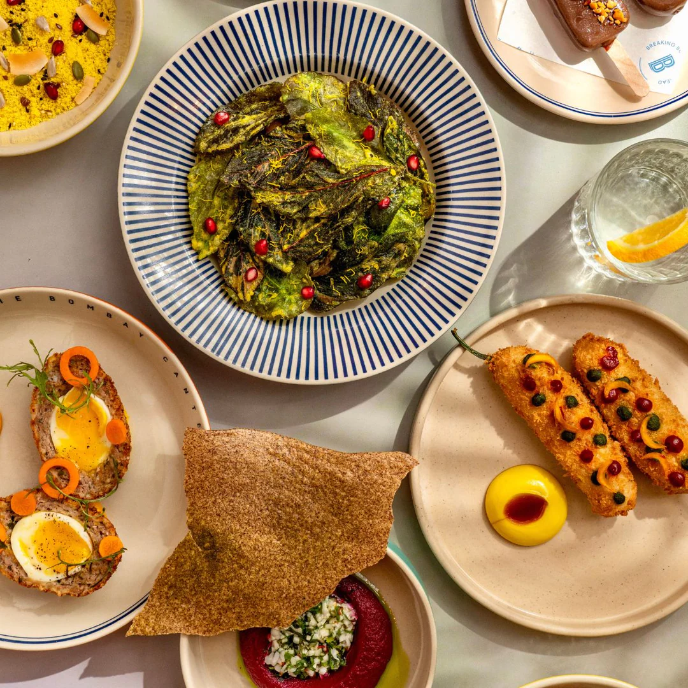
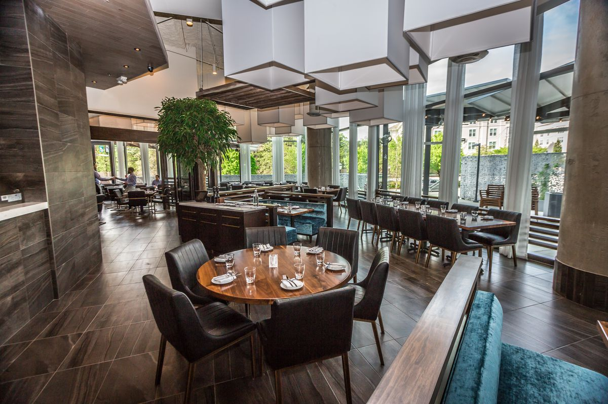

Hyderabad's favourite restaurant chain, since 2018
The culinary legacy of SG dates back to 2018 when a visionary entrepreneur, Swathi Gopi, laid the foundation for a futuristic brand in the hotel industry. Capitalizing on the success of it's very first venture

The CRISPY Restaurant
A perfect blend of fun, familiarity, and innovation, we reimagine traditional recipes, We are passionate about telling the untold story of Indian cuisine. With a fun and playful approach, we'll bring you closer to your roots, filling your heart and stomach with the Bombay charm! We are passionate about telling the untold story of Indian cuisine. With a fun and playful approach, we'll bring you closer to your roots, filling your heart and stomach with the Bombay charm! infusing them with seasonal ingredients using modern techniques. Our chefs take India’s culinary traditions and marry them expertly with familiar flavours that will instantly resonate with you and make you smile. Each dish holds a rich story, and we're eager to share these tales, one plate at a time.
MISSION
Hunger is a pervasive issue that continues to afflict millions around the world. Despite progress in various areas, many regions, including rural India, still face the grim reality of food insecurity. Together, let's work towards a world where no one has to endure the pangs of hunger. This year, let's pass on the plate! Proceeds from the Independence Day Daawat will be converted to ration kits with the help of JOSHConnect, a foundation that connects NGOs, beneficiaries and donors across the world. These ration kits will then be distributed across 2000+ families in Raigad & Palghar, Maharashtra.

Our Partners
Proceeds from the Independence Day Daawat will be converted to ration kits with the help of JOSHConnect. These ration kits will then be distributed with the help of a leading volunteer-run organisation across villages in the Raigad and Palghar districts of Maharashtra. The organization is a volunteer-based, zero-funds organization that works to get surplus food from restaurants and the community to serve less fortunate people. Their vision is to beat global hunger and bring out the best in humanity using food as the medium. Every Independence Day, they take up a mission to inch toward their global vision, and this year, they aim to feed 10 Million Meals over 10 days across 1000 villages The SG Restaurant is proud to collaborate with them to be a part of their mission this year.